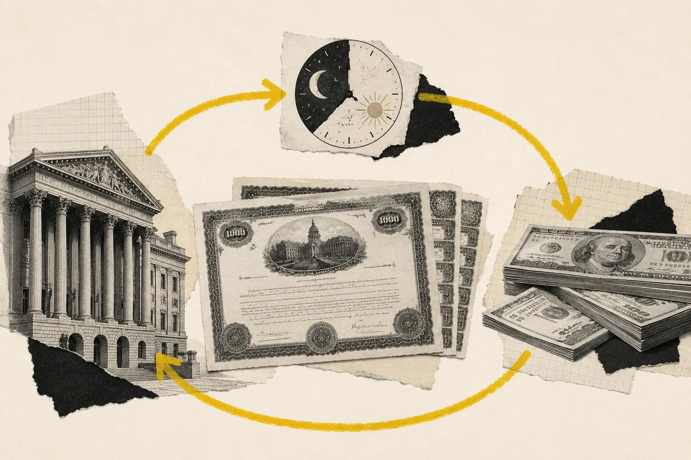

Imagina que tienes 100 millones de dólares en bonos del Tesoro. No eres precisamente pobre. Tienes uno de los activos que bancos, fondos y gobiernos tratan como referencia de seguridad y liquidez. El pequeño problema es que esta noche necesitas efectivo. No dentro de diez años, cuando venza el bono. Hoy.
Podrías vender los Treasuries, pero quizá no quieres desprenderte de ellos. Tal vez eres un dealer y forman parte del inventario con el que haces mercado; quizá mañana necesitas recuperarlos. Así que encuentras a alguien con el problema contrario: tiene mucho efectivo y quiere aparcarlo durante unas horas con una garantía detrás. Le vendes temporalmente los bonos por 100 millones y acuerdas recomprárselos mañana por 100 millones y un poco más.
Tú consigues efectivo. La otra parte recibe los bonos. Mañana deshacéis la operación y esa pequeña diferencia de precio funciona económicamente como interés. Enhorabuena: acabas de hacer un repo. Detrás de esa operación casi infantil vive una de las tuberías más grandes del sistema financiero.

UN PRÉSTAMO DISFRAZADO DE COMPRAVENTA
Repo viene de repurchase agreement, acuerdo de recompra. Jurídicamente hay una venta de valores y un compromiso simultáneo de recomprarlos después. Económicamente, la intuición útil es bastante más sencilla: es un préstamo garantizado. Una parte necesita efectivo, la otra se lo presta, y unos valores —muy a menudo Treasuries— quedan en medio como colateral.
Por eso la Reserva Federal de Nueva York describe el repo como una operación económicamente similar a un préstamo garantizado por valores. La diferencia legal importa para liquidación, neteo, uso del colateral y qué ocurre si una contraparte incumple, pero no necesitas empezar por ahí. Para entender el mecanismo basta con pensar: “dame efectivo; te dejo mi bono; mañana lo deshacemos”.
¿POR QUÉ ALGUIEN NECESITA PEDIR DINERO SOLO HASTA MAÑANA?
Porque los grandes intermediarios financieros viven rodeados de activos que no son efectivo. Un dealer de Wall Street puede tener miles de millones en Treasuries porque compra, vende y mantiene inventario para dar liquidez al mercado. Si tuviera que financiar cada dólar de ese inventario exclusivamente con capital propio, hacer mercado sería carísimo. Repo le permite utilizar los propios bonos como garantía para conseguir financiación y sostener un balance mucho mayor.
La operación dura quizá una noche, pero el bono puede vencer dentro de diez años. Al día siguiente el dealer renueva la financiación; luego vuelve a hacerlo. Esta combinación —activo largo, financiación cortísima— suena frágil porque puede serlo. También es completamente normal en la arquitectura moderna de mercados.
Y no estamos hablando de un rincón diminuto. El Office of Financial Research estimó que en el tercer trimestre de 2025 el mercado repo estadounidense acumulaba alrededor de 12,6 billones de dólares de exposiciones diarias medias. El número importa menos que la escala: repo no es una curiosidad de traders. Es infraestructura.
AL OTRO LADO HAY ALGUIEN CON DEMASIADO EFECTIVO
Si un dealer necesita convertir bonos en dinero, alguien tiene que querer hacer el movimiento contrario. Ahí aparecen fondos monetarios, bancos y otros intermediarios con efectivo que buscan una rentabilidad de muy corto plazo sin asumir un préstamo completamente desnudo. Prestan el dinero y reciben valores como garantía.
Eso convierte a los Treasuries en algo más que “deuda pública estadounidense”. Un bono del Tesoro no solo promete pagos futuros; también funciona como colateral. Y el colateral tiene una segunda vida: permite conseguir financiación. Esa función explica por qué la demanda de Treasuries atraviesa bancos, fondos, derivados y mercados monetarios incluso cuando nadie está pensando en financiar el déficit federal.
UN BONO DE 100 NO SIEMPRE TE CONSIGUE 100
El prestamista de efectivo no tiene por qué entregarte exactamente todo el valor de mercado del activo. Si tu colateral vale 100, puede prestarte 98. Los dos restantes funcionan como colchón por si mañana incumples y el precio del activo ha caído antes de que pueda venderlo. Esa diferencia es el famoso haircut, literalmente “corte de pelo”, porque las finanzas también tienen sentido del humor cuando quieren.
Cuanto más volátil, difícil de vender o arriesgado sea el colateral, mayor puede ser la protección exigida. Los Treasuries suelen recibir condiciones muy favorables porque tienen un mercado gigantesco y un riesgo de crédito muy bajo, aunque no existe un haircut universal: dependiendo del segmento y la estructura de la operación puede ser pequeño e incluso cero.
Lo importante es la lógica. El valor y la calidad del colateral determinan cuánto efectivo puedes movilizar contra él. Y cuando esa relación cambia en una crisis, el efecto se multiplica por todo un sistema construido encima.
ASÍ APARECE EL APALANCAMIENTO
Supón que tienes 100 de capital y compras Treasuries. Después utilizas esos bonos para pedir prestado en repo y financiar una posición mucho mayor. No has creado riqueza mágicamente; has conseguido controlar más activos con menos capital propio. Eso es apalancamiento.
El mecanismo no es perverso por definición. Los dealers necesitan financiación para mantener inventarios y proporcionar liquidez. Los hedge funds utilizan repo para distintas estrategias. El mercado de Treasuries sería mucho menos fluido si todo intermediario tuviera que financiar cada posición solo con fondos propios. Pero el apalancamiento introduce una dependencia silenciosa: tener activos por valor de mil millones no significa que mañana puedas seguir consiguiendo financiación contra ellos al mismo precio.
En tiempos tranquilos las dos frases parecen casi equivalentes. En una crisis dejan de serlo muy rápido.
EL RIESGO NO ESTÁ SOLO EN EL BONO. ESTÁ EN MAÑANA.
Si financias un bono a diez años con dinero que vence cada noche, has creado un desajuste de plazos. El Treasury no desaparece al amanecer, pero tu financiación sí: tienes que renovarla. Mientras el mercado funciona, esa renovación parece automática. El problema empieza si el prestamista exige más interés, aumenta el haircut, deja de aceptar el colateral o simplemente quiere conservar su efectivo porque también está nervioso.
Entonces aparece una de las distinciones más importantes de las finanzas: solvencia no es liquidez. Puedes tener activos excelentes a largo plazo y no conseguir el dinero que necesitas hoy. Puedes ser rico en balance y morirte de sed en caja. Repo es uno de los lugares donde esa diferencia deja de ser teoría.
SEPTIEMBRE DE 2019: CUANDO LA TUBERÍA EMPEZÓ A CHILLAR
En septiembre de 2019 no había una gran quiebra bancaria ni una pandemia. Coincidieron cosas mucho más aburridas. Las empresas pagaron impuestos, moviendo efectivo hacia la cuenta del Tesoro y reduciendo reservas disponibles en el sistema bancario. Al mismo tiempo se liquidó una cantidad importante de nuevas emisiones de Treasuries, lo que obligó a dealers e inversores a financiar más valores.
La mezcla era sencilla: menos efectivo disponible y más necesidad de efectivo. El 17 de septiembre, SOFR —una referencia basada en financiación overnight garantizada con Treasuries— saltó al 5,25%, muy por encima de los niveles normales de aquellos días. En operaciones concretas, los tipos repo llegaron a registrar picos mucho mayores. Todo esto ocurría mientras el rango objetivo de los fondos federales estaba entre el 2% y el 2,25%.
Los Treasuries seguían siendo buenos activos. Estados Unidos no se había vuelto insolvente durante la noche. Lo que faltaba era capacidad de financiación exactamente donde se necesitaba. La distinción importa porque una explicación tipo “Wall Street perdió confianza” borra el mecanismo real: había un atasco en el mercado que transforma colateral en efectivo.
LA FED NO COMPRÓ EL PROBLEMA. PUSO EFECTIVO CONTRA ÉL.
La Reserva Federal de Nueva York respondió ofreciendo operaciones repo. El 17 de septiembre anunció una operación overnight de hasta 75.000 millones de dólares contra Treasuries, deuda de agencias y determinados valores hipotecarios de agencias. Los participantes entregaban valores y recibían reservas; al vencimiento, la operación se deshacía.
Eso añadió liquidez al sistema y ayudó a devolver los tipos monetarios hacia niveles compatibles con la política de la Fed. Conviene ser preciso aquí: un repo de la Fed no es lo mismo que regalar dinero y tampoco es idéntico a comprar un Treasury permanentemente mediante QE. En ambos casos el balance del banco central puede crecer y las reservas pueden aumentar, pero en repo existe una segunda pata contractual que revierte la operación cuando vence.
Mirar solo “la Fed expandió su balance” es como describir una transfusión diciendo únicamente que una bolsa perdió sangre. Falta saber dónde fue, durante cuánto tiempo y qué obligación quedó al otro lado.
¿Y QUÉ DEMONIOS ES UN REVERSE REPO?
La terminología se vuelve desagradable porque una misma operación tiene dos perspectivas. Quien recibe efectivo y entrega temporalmente valores está haciendo repo; quien entrega efectivo y recibe los valores está haciendo el reverso. Cuando hablamos de la Reserva Federal, la convención mira desde su balance.
Si la Fed entrega efectivo y recibe valores temporalmente, hace repo. Si hace lo contrario —entrega valores y recibe efectivo— realiza un reverse repo. Su facilidad overnight de reverse repo permitió durante años que fondos monetarios y otras contrapartes aparcaran efectivo en la Fed. Eso ayudaba a establecer un suelo para los tipos de muy corto plazo: si puedes prestar a la Fed a determinada tasa, tendrás pocos incentivos para prestar a otra institución por mucho menos.
Misma fontanería básica. Dirección contraria.
DE 2019 SALIÓ UNA VÁLVULA DE EMERGENCIA
El susto de 2019 dejó una lección incómoda: puedes tener muchas reservas en el sistema en conjunto y aun así sufrir una escasez localizada porque los balances bancarios tienen límites, requisitos regulatorios, costes internos y preferencias de liquidez. El dinero no se teletransporta simplemente hacia el sitio donde el tipo de interés está gritando.
Por eso la Fed creó en 2021 la Standing Repo Facility. La lógica es colocar una válvula permanente: si ciertas contrapartes elegibles necesitan efectivo contra buenos valores y los tipos repo empiezan a tensionarse demasiado, tienen un backstop disponible a condiciones anunciadas. No elimina todas las crisis de liquidez. Reduce la probabilidad de que un atasco de financiación overnight se convierta por sí solo en un incendio mayor.
REPO TAMBIÉN ESTÁ DEBAJO DE SOFR
SOFR significa Secured Overnight Financing Rate. La Reserva Federal de Nueva York lo calcula utilizando un enorme volumen de operaciones overnight garantizadas con Treasuries. En castellano humano, intenta capturar aproximadamente cuánto cuesta conseguir dólares hasta mañana dejando como garantía algunos de los valores más líquidos del planeta.
Tras el final de LIBOR, SOFR pasó a ser una referencia central para préstamos y derivados en dólares. Así que esta tubería aparentemente esotérica puede terminar conectada con contratos financieros que jamás mencionan la palabra repo en una conversación cotidiana. Las tripas de Wall Street tienen esa costumbre: parecen remotas hasta que descubres que el precio que generan aparece en otra parte del sistema.
NO EXISTE “EL” MERCADO REPO
Hasta ahora hemos hablado como si todas las operaciones ocurrieran en la misma sala. No es así. Hay repo bilateral, operaciones tri-party en las que una tercera entidad ayuda a gestionar colateral y liquidación, y operaciones compensadas centralmente a través de infraestructuras como FICC. Cada estructura cambia cómo se administra el riesgo, cuánto puede netearse y qué ocurre si una contraparte falla.
Esta fragmentación importa también para medir el mercado. Durante mucho tiempo una parte del repo bilateral no compensado fue especialmente difícil de observar. Las nuevas recopilaciones del OFR han ampliado mucho la visibilidad y son precisamente las que permiten estimar una escala diaria de más de doce billones de dólares.
No necesitas memorizar la arquitectura. Solo recordar que cuando un titular diga “el repo está haciendo X”, la siguiente pregunta útil es: ¿qué parte del mercado?
A VECES LO QUE QUIERES NO ES EL DINERO. ES EL BONO.
Hay una última vuelta interesante. Hemos contado repo como un mercado donde alguien posee valores y quiere efectivo, pero la necesidad puede ir en sentido contrario. Un trader puede necesitar un Treasury concreto para entregar en otra operación, cubrir una posición o cerrar una venta. Entonces estará dispuesto a prestar efectivo en condiciones especialmente favorables simplemente para obtener temporalmente ese título.
Cuando un valor concreto es muy demandado en repo se dice que cotiza special. Eso revela que repo no es solo un mercado de dinero: es también un mercado de colateral. Efectivo y valores circulan simultáneamente, y a veces el activo escaso no es el dólar sino un bono específico.
AHORA CONECTA ESTO CON EL EURODÓLAR
En el Eurodólar vimos que bancos de todo el planeta pueden crear depósitos, préstamos y otras obligaciones en dólares fuera de Estados Unidos. Crear la promesa es una cosa; financiarla y liquidarla cuando el dinero sale del balance es otra. Repo es una de las rutas que permiten transformar activos en financiación en dólares.
Por eso una “escasez de dólares” no significa necesariamente que hayan desaparecido unidades monetarias del planeta. Puede significar que instituciones con activos y obligaciones en dólares no consiguen convertir unos en la financiación que necesitan, en el lugar y momento necesarios, a un precio aceptable. Repo es uno de los indicadores donde ese problema puede aparecer primero.
Y CONECTA ESTO CON LA DEUDA DE ESTADOS UNIDOS
El Tesoro emite una cantidad gigantesca de deuda. Los inversores finales compran gran parte, pero entre la subasta y esos balances existe una maquinaria de intermediación. Los primary dealers absorben emisiones, mantienen inventario y necesitan financiarlo. Cuanto mayor es el mercado de Treasuries, más importante es que la infraestructura capaz de movilizar y financiar esos títulos funcione sin atascarse.
Eso no significa que más deuda pública produzca automáticamente una crisis repo. La causalidad no es tan cómoda. Significa que la emisión de Treasuries, la capacidad de balance de los intermediarios y la disponibilidad de financiación están conectadas. En 2019 esa conexión quedó expuesta: había excelentes bonos y una enorme demanda por financiarlos; durante unas horas, lo escaso fue la tubería.
LA PARADOJA DEL ACTIVO “SEGURO”
Los Treasuries son considerados extremadamente seguros y por eso funcionan tan bien como colateral. Precisamente esa calidad permite construir encima de ellos cantidades gigantescas de financiación y apalancamiento. El resultado parece paradójico: un activo muy seguro puede formar parte de una estructura que sea frágil.
No porque el bono vaya a impagar mañana, sino porque alguien puede haberlo financiado con una obligación que vence mañana. El riesgo no siempre está dentro del activo. A veces está en cómo lo financiamos.
LA RESPUESTA
El mercado repo permite que bancos, dealers, fondos y otras instituciones intercambien temporalmente valores por efectivo. Hace posible financiar grandes inventarios de Treasuries, aparcar liquidez a corto plazo, movilizar colateral, transmitir la política monetaria y construir referencias como SOFR. Todo parte de una promesa muy sencilla: “toma mi bono, dame efectivo y mañana lo deshacemos”.
La parte importante llega después. Una gran parte de las finanzas modernas depende de que esa promesa pueda repetirse mañana a un precio razonable. Cuando puede, repo parece aburridísimo. Cuando no puede, una institución perfectamente solvente puede descubrir que los activos que posee no pagan las obligaciones que vencen hoy.
Y entonces la pregunta deja de ser cuánto dinero existe o cuántos Treasuries hay en el mundo. La pregunta es bastante más concreta: ¿sigue abierta la tubería que convierte uno en el otro?
AUDITABLE, SIEMPRE
FUENTES
Documentación institucional utilizada para comprobar definiciones, tamaño de mercado, infraestructura y el episodio de septiembre de 2019.
- Federal Reserve Bank of New York — Repo and Reverse Repo Operations — Mecánica de repo/reverse repo y su uso en política monetaria.
- Office of Financial Research — Sizing the U.S. Repo Market — Estimación de aproximadamente $12,6 billones de exposiciones diarias medias en 2025Q3.
- Federal Reserve Board — What Happened in Money Markets in September 2019? — Reservas, emisión de Treasuries, presión sobre repo y respuesta de la Fed.
- Federal Reserve Bank of New York — Statement Regarding Repurchase Operation, 17 septiembre 2019 — Operación repo overnight de hasta $75.000 millones.
- Federal Reserve Bank of New York — Secured Overnight Financing Rate — Metodología y relación de SOFR con financiación repo de Treasuries.
- Federal Reserve Bank of New York — Standing Repo Facility — Backstop permanente para financiación garantizada.
- Office of Financial Research — Are Zero-Haircut Repos as Common as Advertised? — Haircuts, riesgo de contraparte y prácticas en repo bilateral.
EXPLICAMOS. NO ASESORAMOS.